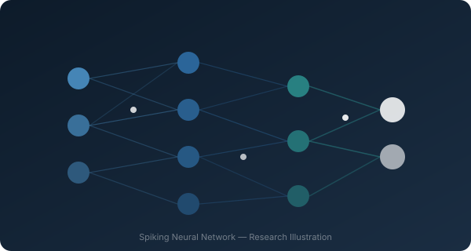

Spiking Neural Networks
for Audio Compression
Exploring event-driven neural computation as a framework for efficient, biologically inspired audio signal processing.
What is this research about?
Traditional neural networks process information continuously — every neuron fires at every timestep, regardless of whether the input has changed. This is computationally expensive and quite different from how biological brains work.
Spiking Neural Networks (SNNs) model neurons more realistically: they only produce output — a "spike" — when their internal state crosses a threshold. This makes them inherently sparse and event-driven, which has significant implications for computational efficiency.
My research investigates whether this spike-based paradigm can be applied effectively to audio signals — a domain defined by continuous temporal dynamics, perceptual complexity, and high data rates — with a particular interest in how SNNs might support audio compression tasks.

SNN node connectivity illustration
The case for event-driven computation
Several properties make SNNs a compelling research direction for signal processing.
Event-driven computation
SNNs compute only when input changes — producing spikes in response to events rather than processing every timestep continuously.
Temporal information
The precise timing of spikes carries information, giving SNNs a natural way to encode temporal dynamics — well-suited to audio.
Sparse activity
Neurons spike infrequently, leading to naturally sparse representations — a key property for efficient encoding and compression.
Energy efficiency
On neuromorphic hardware, SNNs can offer substantial energy savings compared to conventional deep learning, due to their sparse firing patterns.
The challenge of efficient audio coding
Audio compression is one of the most practically impactful problems in signal processing. From streaming to storage, the ability to represent audio at low bitrates without sacrificing quality has enormous real-world consequences.
Classical methods (MP3, AAC, Opus) exploit perceptual properties of the human auditory system. Neural approaches add another dimension: learned representations that can capture complex audio structure not accessible to hand-crafted codecs.
The open research question I am exploring: can spike-based representations — sparse, temporal, event-driven — provide an effective framework for audio encoding? And what trade-offs emerge between reconstruction quality, sparsity and computational cost?
Key concepts
The questions driving this work
These are the open scientific questions that motivate the research. They are questions — not yet answered conclusions.
Can Spiking Neural Networks provide efficient representations of audio signals that are useful for compression?
How can the temporal precision of spike timing be exploited to encode audio dynamics more compactly?
What role can sparse, event-driven representations play in reducing the bitrate requirements of audio codecs?
How can reconstruction quality and computational efficiency be balanced in an SNN-based audio system?
Research pipeline
The research follows a structured pipeline from raw audio input to evaluation of the reconstructed signal. Each stage introduces specific challenges and research opportunities.
This pipeline is a research framework, not a deployed system. Each block represents an active area of investigation.